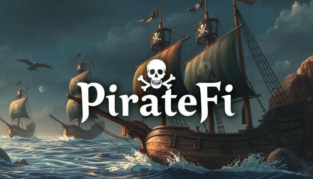

Xuất hiện tựa game "cướp dữ liệu" người chơi ngay trên Steam, bị gỡ bỏ vẫn thành công hack máy gần nghìn người
Trước khi bị gỡ bỏ, tựa game này cũng đã gây thiệt hại không nhỏ cho đông đảo người chơi.
Steam luôn tỏ ra rất cảnh giác với những tựa game không rõ nguồn gốc, hoặc đưa lên nền tảng này với những mục đích bất chính.
Thế nhưng không phải lúc nào, Steam cũng có thể ngăn chặn hết mọi vấn đề. Bằng chứng là mới đây thôi, vừa xuất hiện một tựa game gây ảnh hưởng nghiêm trọng cho cả nghìn người dùng trên nền tảng nổi tiếng này.
Tựa game ấy mang tên PirateFi - một game sinh tồn phiêu lưu với chế độ hợp tác nhiều người chơi.
Xuất hiện trên Steam từ ngày 6/2, ban đầu, PirateFi mang tới một cảm giác khá "vô hại", không khác gì các trò chơi bình thường khác. Mô tả của nhà phát triển cũng đề cập tới việc tựa game này hiện đang trong giai đoạn thử nghiệm và sẽ bổ sung thêm các tính năng mới trong tương lai như câu cá, săn bắn, xây dựng, chế tạo và cả chế độ PvP nữa. Hứa hẹn là vậy, thế nhưng chỉ ít ngày sau đó, PirateFi bất ngờ bị gỡ khỏi Steam một cách khẩn cấp.
Cụ thể, chỉ sau khi ra mắt 4 ngày, PirateFi đã "bay màu" khỏi Steam và lý do sẽ khiến không ít người chơi phải tá hỏa. Theo đó, nguyên nhân vì trò chơi đã update một bản cập nhật chứa phần mềm độc hại. Ngay sau khi tải cập nhật, các game thủ sẽ bị dính một mã độc lên PC - thứ sẽ đánh cắp cookie trình duyệt, qua đó dẫn tới việc tài khoản của người chơi bị chiếm đoạt. Theo thống kê, đã có khoảng 800 game thủ gặp ảnh hưởng trước khi PirateFi bị gỡ bỏ hoàn toàn.
Đây cũng không phải là lần đầu tiên Steam xuất hiện những "sự cố" như vậy. Trước đó, nhiều người dùng cũng đã bức xúc khi tài khoản Steam của mình bị đánh cắp không rõ lý do.